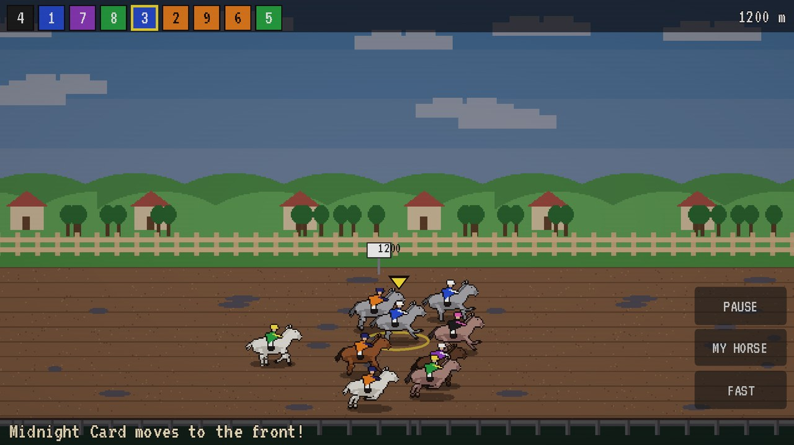
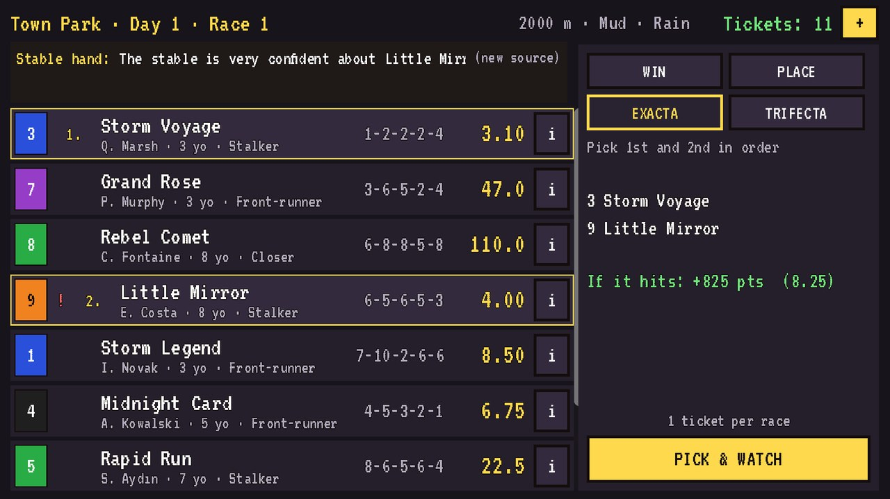
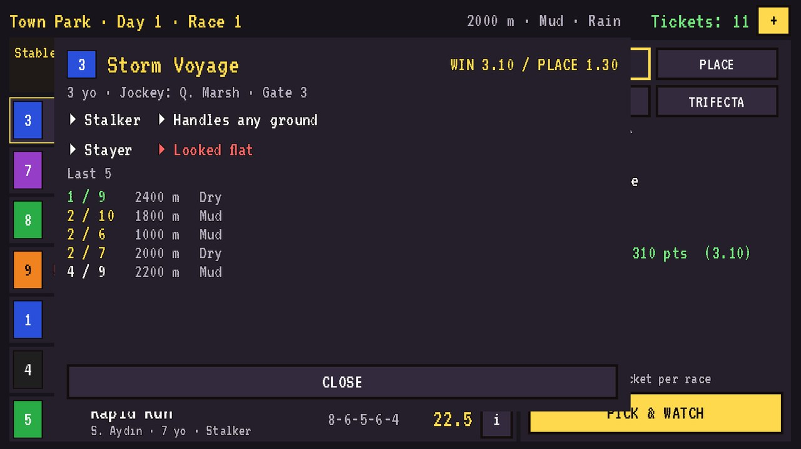
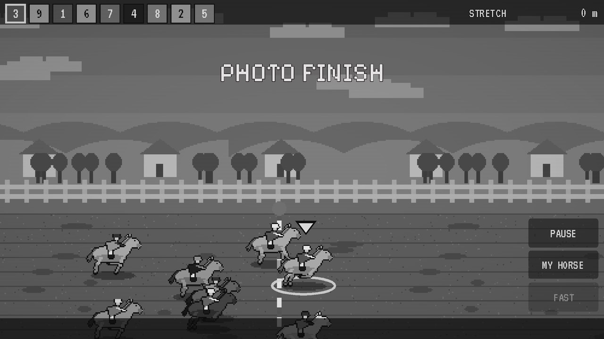
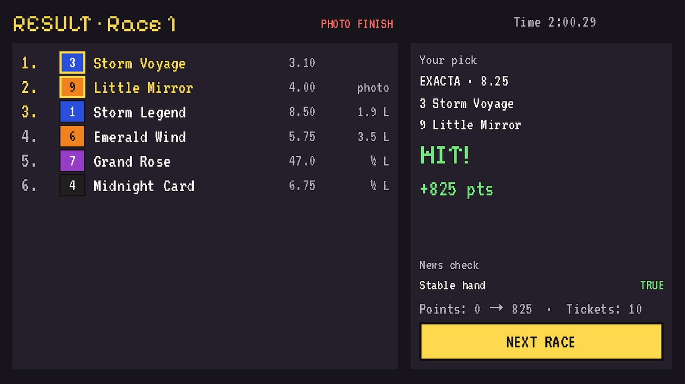

Read the form, pick the winner, watch the photo finish. A free, offline pixel-art horse racing prediction game for iPhone and iPad.
App Store · 20-second gameplay clip · Home
| Title | Paddock: Horse Racing Game |
| Developer | Cengizhan Hakan — solo developer, Turkey |
| Platform | iPhone and iPad, iOS 15 or later (Android build in preparation) |
| Price | Free, with ads; one-time “Remove ads” purchase (€3.99) |
| Release | 10 September 2026 |
| Age rating | 4+ |
| Languages | English, German, Turkish (French and Spanish in preparation) |
| Engine | Godot 4.7 / GDScript |
| Modes | Single player, fully offline, no account |
| Press contact | admin@investbud.de |
| Review codes | “Remove ads” offer codes available on request |
Paddock is a pixel-art horse racing prediction game. Every race card shows six to ten horses with real form — last five results, ground and distance preferences, running style, training notes and stable news — and your job is to find the horse the market has priced wrong. Then you watch the race play out with live commentary and photo finishes.
Each race card is a puzzle made of information. Recent results tell you one thing, the trainer's notes another, and the stable news arrives from eight different sources — some of them reliable, some of them traps. Learn which is which and you start beating the market.
Picks are Win, Place, or the first two or three in order. Correct picks score points based on the displayed price; wrong picks score zero. Points only ever go up, so a bad day costs you nothing but time. Each race costs one ticket, and tickets refill on a timer, through a daily bonus, or by watching an optional ad.
The simulation is deterministic and fair by design: the information you read is genuinely linked to the outcome, so when you miss, you can go back and see what you misread. The same weekly card is dealt to every player in the world, with a Game Center leaderboard that resets each Sunday.





Paddock was built by one person in Godot 4.7, with Claude Code writing most of the implementation across every commit in the repository. The pixel art, store screenshots and gameplay videos are generated by Python scripts rather than drawn by hand, and the release pipeline — build, signing, upload and store metadata — is scripted against the App Store Connect API.
{kind=link}
{kind=link}